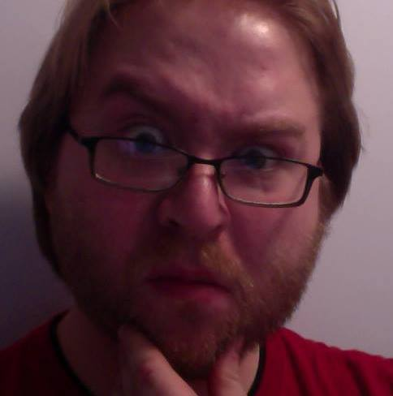

Welcome
 My name is Brian Lee, aka Bleed (Brian Lee Drawings). I was born in Lexington, Kentucky March 20th, 1988. I grew up with two older brothers in a pretty rural part of Richmond, KY. My parents only allowed a very short amount of TV and video games, so drawing became one of my main sources of entertainment.
I had never been a good student in class. I would rather doodle in my notebooks than pay attention to the teachers. I graduated high school in 2006 and it was hard to find a school for artists in my area. I enrolled at Spencerian College and got my Associates Degree in Graphic Design. I was able to get a few freelance gigs designing logos for local businesses but it was not the real artistic outlet I was looking for.
In 2012 I moved to New Jersey after I was accepted into The Kubert School of Cartoon and Graphic Art. The Kubert School is notorious for being one of the hardest schools for artist. 8 hours a day, 5 days a week you will be drawing. That does not include the sleepless nights doing homework for your 10 classes you have every week. They strongly recommend that you do not have a job while attending because of the workload, but I had to for rent and food. It was the hardest 3 years of my life, but I got out alive and graduated in May of 2015. Now here I am, ready to work on what I love to do.